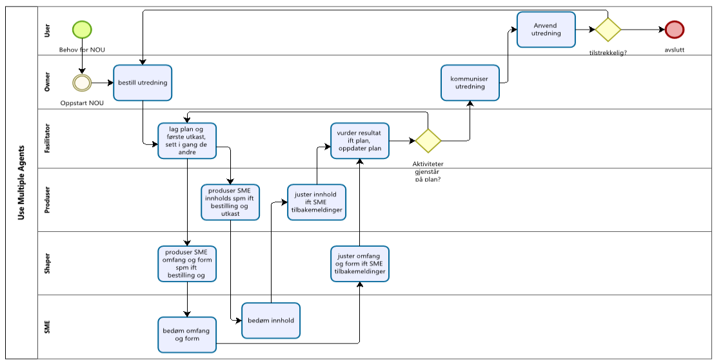

Using chat APIs to facilitate conversation between users and the service
Users can engage in natural conversations with the system which through chat APIs communicate and develop the strategy.
Create six assistants to work together, the StratOwner, StratFasilitator, StratProduser, StratShaper, StratSME and StratUser that can each do their part of the work
Users can talk to each of the roles to shape document.

Providing AI on premises
The AI system can be hosted locally, ensuring privacy and security of user data.